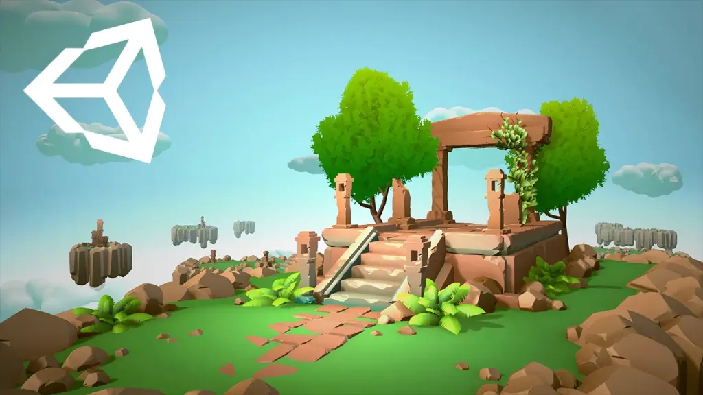

What a UX/UI designer can learn by exploring Unity and understanding game implementation constraints.

View full imageWhy I explored Unity
As a UX/UI designer interested in games, exploring Unity helped me understand more about how game interfaces and interactions are actually built.
It is one thing to design screens in Figma. It is another to see how those screens connect to scenes, inputs, states and real-time behavior.
Learning through constraints
Unity makes implementation constraints visible. Designers can better understand performance, hierarchy, interaction states, camera context and how UI behaves inside a game environment.
This knowledge can make design decisions more realistic.
Prototyping empathy
Even simple experiments can build empathy for developers. When designers understand the effort behind implementation, collaboration becomes more precise and respectful.
The goal is not to become a full-time developer. The goal is to design with better awareness of the medium.
Game UI as a system
Game interfaces are connected to input, player state, camera behavior, animation, audio and feedback. They are not isolated static screens.
Working in Unity helps reveal that systemic nature.
The takeaway for designers
Technical curiosity can make designers stronger collaborators. It helps with handoff, feasibility discussions and product thinking.
For Game UX, understanding the engine is especially valuable because the interface is part of a living interactive system.
takeaway